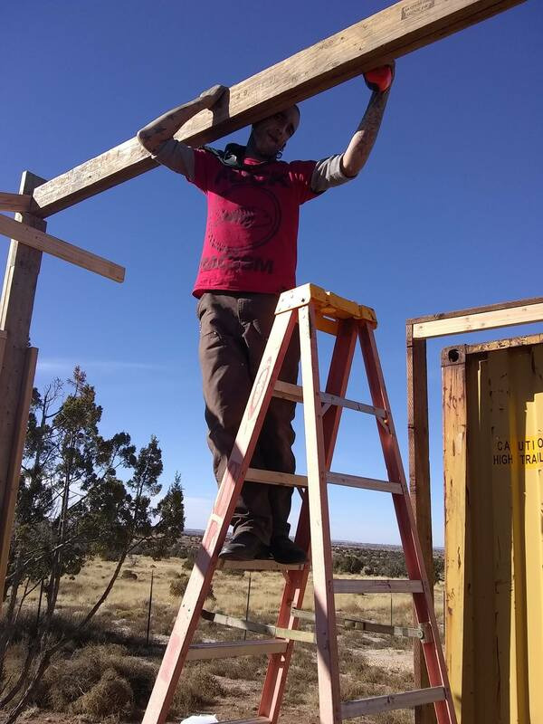
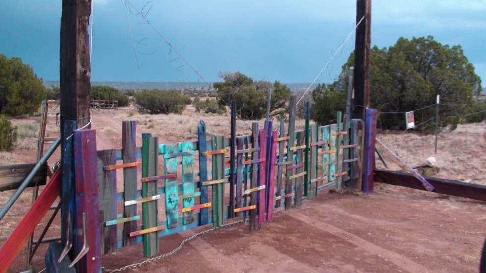
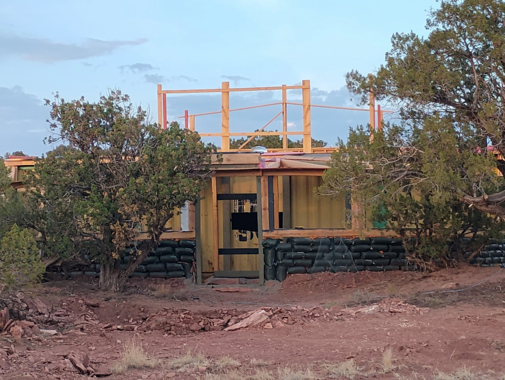

Founder, farmer, builder, painter at Hope Grows, Snowflake, Arizona
Hope Grows is Robert's brainchild. After more than a decade in the grip of heroin, he got clean, but not satisfied. Healing came slowly and started small: a garden at first. As the plants grew, he became more invested in their success and cared less and less about drugs.
He didn't stop there. He wanted to help others like him: people dealing with addiction, mental health struggles, or simply an empty fridge. So he began building a place on forty acres of off-grid land in rural Navajo County: grow food for hungry people, and give anyone who needs one a space to work on their art, learn to grow food, or just enjoy the Arizona desert.
He raised every structure on the property with his own hands (the studio, the cabin, the green house) and covered it all in color: painted doors, gates, found-wood pieces. None of it is for sale. The art isn't product; it's part of the place, the way the junipers are part of the place.
Today Robert runs Hope Grows with artist Caryn Bopp and three very enthusiastic dogs, welcoming campers, volunteers, gardeners, and resident artists who all come out to grow hope in themselves.
Follow the journey: Facebook · Healing Desert →


“We need to create a culture of hope, and that is what I am trying to do.”Robert Czaplicki